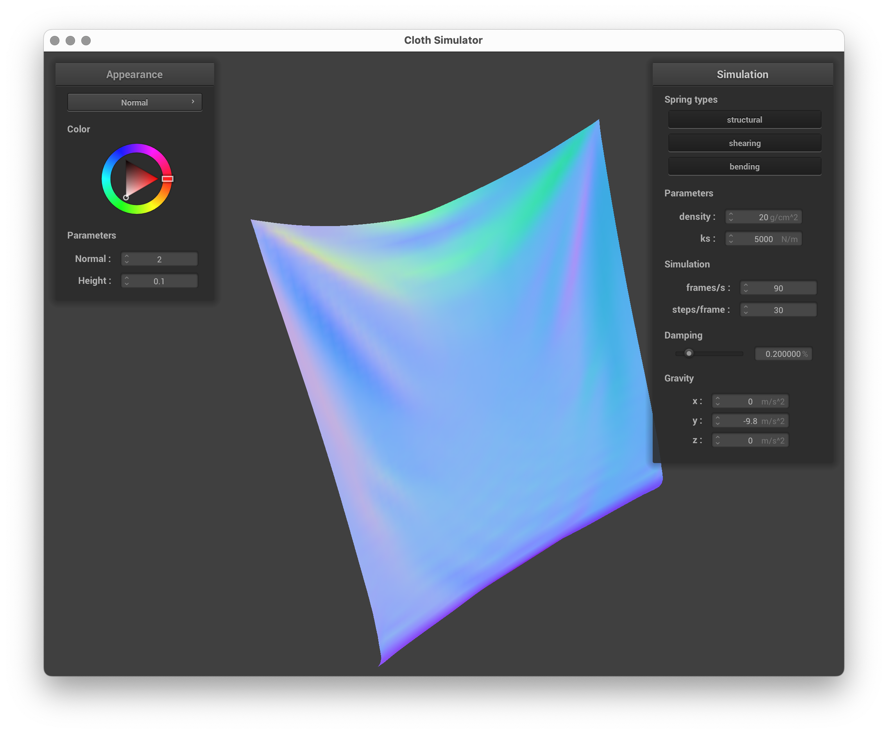

Team Member: Jason Yang
In this project, I implemented cloth simulation in five different parts. In part 1, I built a grid of masses and springs that would represent the cloth. In part 2, I simulated the external forces (such as gravity) and spring forces in the grid of masses and springs, and these were constrained such that the spring would not stretch more than a certain threshold. In part 3, I implemented the cloth's collisions with spheres and planes so that the cloth would rest on top of these objects, instead of falling through them. In part 4, I implemented the cloth's collisions with itself by building a correction vector if the cloth came into contact with itself. In part 5, I created GLSL shaders for diffuse shading, Blinn-Phong shading, texture mapping, bump mapping, and displacement mapping.
I first created the point masses, and then I created the springs.
To create the point masses, I created a nested for loop, with the outside loop variable i going from 0 to num_height_points and the inside loop variable j going from 0 to num_width_points. If the orientation is horizontal, I set the PointMass's position to be (j * width / num_width_points, 1, and i * height / num_height_points. Otherwise, the orientation was horizontal, and I set the PointMass's position to be (j * width / num_width_points, i * height / num_height_points, 0.002 * ((double) rand() / RAND_MAX) - 0.001). If the (i, j) coordinate is pinned, then I set the PointMass's pinned attribute to true, otherwise I set it to false. Finally, I emplace this new PointMass into the vector of point masses. This causes the PointMasses to be stored in row major order.
To create the springs, I created a nested for loop, with the outside loop variable i going from 0 to num_height_points and the inside loop variable j going from 0 to num_width_points. First, I get the address of the current point mass whose x position is at j and y position is at i and call it cur_point_mass. If j >= 1, I insert a spring between cur_point_mass and the point mass with address cur_point_mass - 1, with spring type STRUCTURAL. If i >= 1, I insert a spring between cur_point_mass and the point mass with address cur_point_mass - num_width_points, with spring type STRUCTURAL. If j >= 2, I insert a spring between cur_point_mass and the point mass with address cur_point_mass - 1, with spring type BENDING. If i >= 2, I insert a spring between cur_point_mass and the point mass with address cur_point_mass - 2 * num_width_points, with spring type BENDING. If i >= 1 and j >= 1, I insert a spring between cur_point_mass and the point mass with address cur_point_mass - 1 - num_width_points, with spring type SHEARING. If i >= 1 and j < num_width_points - 1, I insert a spring between cur_point_mass and the point mass with address cur_point_mass + 1 - num_width_points, with spring type SHEARING.
Take some screenshots of scene/pinned2.json from a viewing angle where you can clearly see the cloth wireframe to show the structure of your point masses and springs.Above: some different viewing angles of the cloth wireframe to show the structure of the point masses and springs.
Show us what the wireframe looks like (1) without any shearing constraints, (2) with only shearing constraints, and (3) with all constraints.Above: wireframe without any shearing constraints
Above: wireframe with only shearing constraints
Above: wireframe with all constraints
First, I apply all external accelerations to each point mass by looping through all point masses, and then for each point mass, I also loop through all external accelerations and add the mass * external acceleration to the point mass's forces.
Then, I apply the spring forces acting on each spring by looping across all springs. If the spring enables structural constraints, I first calculate a 3D vector called point_mass_a_minus_b, which is the spring's a point mass's position minus the spring's b point mass's position. The spring factor is 1, unless the spring's type is BENDING. The force, F_s, is the spring factor * cp->ks * (the norm of point_mass_a_minus_b - the spring's rest length). Finally, I add -F_s * the normalized point_mass_a_minus_b vector to the spring's point mass a force vector and F_s * the normalized point_mass_a_minus_b vector to the spring's point mass b force vector.
Next, I calculate the Verlet integration to computer new point mass positions. I iterate through the all point masses, and for each point mass, if the point mass is not pinned, I calculate the 3D vector x_t_plus_delta_t, which is the point mass's position + (1 - the damping constant / 100) * (the point mass's position - the point mass's last position) + the point mass's forces / mass * delta_t^2. Then, I set the point mass's last position to the point mass's current position, and I set the point mass's position to x_t_plus_delta_t.
Finally, I constrain the changes to the length of each spring such that it does not change in length by more than 10% of its rest length. For each spring, if the structural constraints are enabled, I first create pointers to PointMass a and PointMasss b, and I call it point_mass_a and point_mass_b. Then, I calculate the length between the two point masses by subtracting Point Mass b's position from Point Mass a's position. I also calculate the 3D movement vector, which is the vector that is in the direction between a and b and of the maximum length, 1.1 * the spring's rest length. If that distance > 1.1 * the spring's rest length, we split the following into 3 cases: (1) being if both points a and b are not pinned, (2) being if only point mass a is pinned, and (3) being if only point mass b is pinned. In case (1), I calculate the midpoint betwen point mass a and point mass b, and I set point mass a's position to be 0.5 * movement + midpoint and set point mass b's position to be -0.5 * movement + midpoint. In case (2), I set point mass b's position to be -movement + point mass a's position. In case (3), I set point mass a's position to be -movement + point mass b's position.
Above: cloth with spring constant 5, left = mid drop, right = at rest
Above: cloth with spring constant 50, left = mid drop, right = at rest
Above: cloth with spring constant 500, left = mid drop, right = at rest
Above: cloth with spring constant 5000, left = mid drop, right = at rest
Above: cloth with spring constant 50000, left = mid drop, right = at rest
With a lower spring constant, the cloth folds on itself far more, and it seems overall looser and with less structure compared to a higher spring constant. At you increase the spring constant, the cloth becomes more rigid and takes a shorter amount of time to reach a resting state. The cloth is more maleable when the spring constant is lower.
What about for density?Above: cloth with density 5, left = mid drop, right = at rest
Above: cloth with density 10, left = mid drop, right = at rest
Above: cloth with density 15, left = mid drop, right = at rest
Above: cloth with density 20, left = mid drop, right = at rest
With lower densities, the cloths seem lighter, and at rest, the cloths droop down a fair bit less than the cloths that have higher densities. This happens due to the increased mass that they have, so gravity pulls the non pinned parts of the cloth down more, and the larger mass results in larger spring forces betwen two different point masses. Furthermore, as the density of the cloth increases, the angle of the folds that are also present in the cloths are angled further down.
What about for damping?Above: cloth with damping 15, left = mid drop, right = at rest

Above: cloth with damping 20, left = mid drop, right = at rest
Above: cloth with damping 30, left = mid drop, right = at rest
With lower damping, the cloth moves more quickly than the cloth that has higher damping, even though the overall forces that are acting on the cloth are the same. With lower damping, the cloths also move with a greater range of motion, and at certain damping values, the cloth has more significant forward and backward motions.
Show us a screenshot of your shaded cloth from scene/pinned4.json in its final resting state! If you choose to use different parameters than the default ones, please list them.
Above: screenshots of the resting state of the shaded cloth from scene/pinned4.json from different angles
Inside of the cloth's simulate function, I create a for loop after handling self collisions and before constraining the spring changes to be at most 1.1 * the spring's rest length. In this for loop, I first loop over each point mass, and for each point mass, I loop over all collision objects. For each collision object, I call the collision object's collide function, with point mass as its parameter.
Now, to handle sphere collisions, I modify Sphere's collide function. I first check whether the point mass's position is within the sphere by checking whether the norm of the point mass's position - the sphere's origin is <= the radius of the sphere. If it is inside the radius's sphere, I do the following: I first calculate pos_to_origin, which is the normalized direction between the position to the origin. Then, I calculate tangent_point, which is the point at which the point mass should intersect the sphere. This value is set to pos_to_origin * radius + origin. Then, I calculate correction_vector, which is tangent_point - the point mass's last position. I then set the point mass's position to be the point mass's last position - (1 - the friction coefficient) * correction_vector.
I calculate hash positions for each 3D vector by calculating w = 3 * width / num_width_points, h = 3 * height / num_height_points, and t = max(w, h). Then, I calculate new_x = (pos.x - fmod(pos.x, w)) / w, new_y = (pos.y - fmod(pos.y, h)) / h, and new_z = (pos.z - fmod(pos.z, t)) / t. Then, I calculate w_mul = ceil(num_width_points) / 3, h_mul = ceil(num_height_points / 3), and t_mul = either w_mul or h_mul, depending on whether t == w or t == h. t_mul shadows w_mul if t == w, and t_mul shadows h_mul otherwise. Finally, I return new_x * h_mul * t_mul + new_y * t_mul + new_z.
Now, to handle plane collisions, I modify Plane's collide function. I first calculate the tangent time, which is the dot product between the point mass's position - the plane's point with the normal vector. If the tangent time is < 0, I do the following: I first calculate the correction_vector to be the point mass's position + (SURFACE_OFFSET - tangent_time) * the normal vector - the point mass's last position. I then set the point mass's position to be the point mass's last position + (1 - the friction coefficient) * correction_vector.
Left: sphere with ks = 500, Middle: sphere with ks = 5000, Right: sphere with ks = 50000
As the value of the spring constant increases, there are less folds, and the cloth also seems less wrapped around the ball.
Show us a screenshot of your shaded cloth lying peacefully at rest on the plane. If you haven't by now, feel free to express your colorful creativity with the cloth! (You will need to complete the shaders portion first to show custom colors.)To handle self collisions, inside of the cloth's simulate function, between computing new point mass positions using Verlet integration and handling collisions with other primitives, I first build the spatial map, and then for each point mass, I call the self_collide function with the point mass and simulation_steps passed in.
To build the spatial map, I first delete every entry from the map and clear the map, and then for every point mass, I calculate hp, the point mass's hash_position, from the point mass's position. If the map's count of the hp key is zero, I create a new vector of point mass pointers. Otherwise, I push back the point mass into the vector of point masses present at map[hp].
Left: Density = 1, Middle: Density = 50, Right: Density = 100
As the density increases, the cloth seems to fold more onto itself more tightly, as the space between edges on each fold decreases as the density increases. Additionally, the folds become less straight and more varied as the density increases.
Left: ks = 3000, Middle: ks = 7000, Right: ks = 10000
As the spring constant increases, the width that the cloth folds onto itself increases, and the folds become more straight.
In the following .frag files for each subpart, I computed k_d to be a float of 1.0, the intensity vector I to be vec4(u_light_intensity, 1.0), r to be length(vec4(u_light_pos, 1.0) - v_position), the l vector to be vec4(u_light_pos, 1.0) - v_position, and the h vector to be ((vec4(u_cam_pos, 1.0) - v_position) + l) / length((vec4(u_cam_pos, 1.0) - v_position) + l). For Diffuse.frag, I computed the output color to be k_d * (I / (r * r)) * max(0, n_dot_l), and the output color's a attribute to be u_color.a. For Texture.frag, I computed output_color to be texture(u_texture_1, v_uv), and I set the output_color's a attribute to 1. For Mirror.frag, I computed the vector w_o to be u_cam_pos - the 3D version of v_position, the vector w_i to be -w_o + 2 * dot(w_o, the normalized 3D v_normal) * the 3D version of v_normal. I set the out_color to be texture(u_texture_cubemap, w_i) and the out color's a attribute to be 1. In Phong.frag, I followed the formulas for the Blinn-Phong shading model exactly and set the result of the Blinn-Phong shading model as the output_color. The out_color's a attribute is set to u_color.a. Both Bump.frag and Displacement.frag share the same code, and it is implemented by replacing the Phong.frag's normal vector code with the TBN matrix multiplied by a 3D vector of (-dU, -dV, 1.0).
Explain in your own words what is a shader program and how vertex and fragment shaders work together to create lighting and material effects.A shader program is code that is used by a graphics processor while rendering graphics. The vertex shaders give the geometry of the arrangement of vertices, and it passes info into the fragment shader so that the fragment shaders can assign each pixel a color value. Some of the different types of data passed from the vertex shaders into the fragment shaders include the camera position, the light position, the light intensity, and the texture.
Explain the Blinn-Phong shading model in your own words. Show a screenshot of your Blinn-Phong shader outputting only the ambient component, a screen shot only outputting the diffuse component, a screen shot only outputting the specular component, and one using the entire Blinn-Phong model.Above: only the ambient component
Above: only the diffuse component
Above: only the specular component
Above: all components
The Blinn-Phong shading model divides the shading portion into three different components: the ambient, the diffuse, and the specular. The ambient component, k_a * I_a, provides illumination that arises after > 1 bounce. The diffuse component, k_d * (I/(r^2)) * max(0, n dot l), represents the diffuse reflection of light by the sphere and cloth. The specular component, k_s * (I/(r^2)) * max(0, n dot h)^p, where h = (v + l) / norm(v + l), represents the light that is reflected, creating the glossy effect that we see in the rendering.
Show a screenshot of your texture mapping shader using your own custom texture by modifying the textures in /textures/.Above: texture mapping using my own custom texture
Show a screenshot of bump mapping on the cloth and on the sphere. Show a screenshot of displacement mapping on the sphere. Use the same texture for both renders. You can either provide your own texture or use one of the ones in the textures directory, BUT choose one that's not the default texture_2.png. Compare the two approaches and resulting renders in your own words. Compare how your the two shaders react to the sphere by changing the sphere mesh's coarseness by using -o 16 -a 16 and then -o 128 -a 128.Above: the bump map's texture
Above: the bump mapping with -o 16 -a 16
Above: the bump mapping with -o 128 -a 128
Above: the displacement mapping with -o 16 -a 16
Above: the displacement mapping with -o 16 -a 16
Above: the displacement mapping with -o 128 -a 128
It appears that at a sample rate of 16, bump mapping performs better than displacement mapping, since the sphere is far too deformed from the shape of a sphere, and it captures the texture somewhat well. At a sample rate of 128, the displacement mapping performs much better than bump mapping, since the shape of the sphere is much less deformed, and the lighting is more accurately portrayed in the displacement mapping compared to the bump mapping.
For bump mapping, as the samples increase, the noticable change is the quality of the texture on the image. The quality increases drastically, and there is less aliasing as the sample rate increases. For displacement mapping, as the samples increase, the shapes present in the images become less deformed but more bumpy and sharp in texture.
Show a screenshot of your mirror shader on the cloth and on the sphere.Above: mirror shader on the cloth and on the sphere